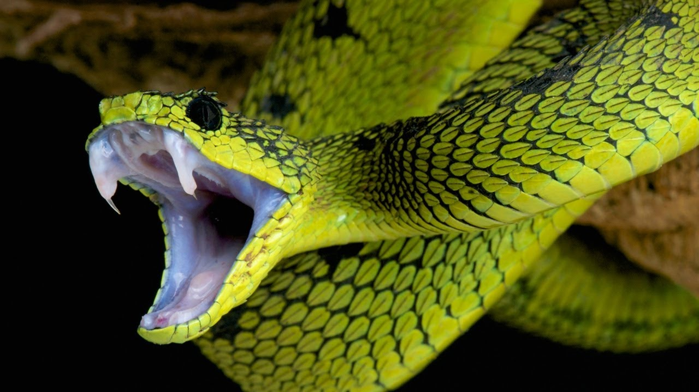
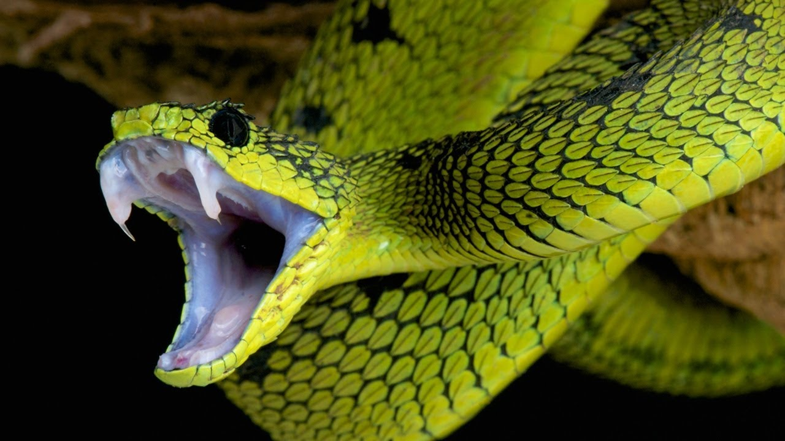

Змії – це рептилії, які у більшості людей викликають страх, так як багато з них отруйні або шкідливі.
Зміїна отрута – це складна речовина, яка має різний склад у різних видів рептилій. У деяких в ньому містяться ферменти, небезпечні для нервів, у інших – для серця, у третіх – розщеплюють ДНК.
Усі змії – хижаки. Більшість з них не вміють жувати і використовують зуби тільки для захоплення і розривання їжі на частини.
У змій дві пари зубів на верхній щелепі і одна на нижній. Зуби у змій ростуть все життя. Протягом життя всі вони змінюються.
У багатьох змій досить слабо розвинений зір. Але зате вони вміють розрізняти теплі об’єкти, немов тепловізор і добре реагують на рух. Але варто відзначити, що гарний зір мають деревні змії.
.jpg)
.jpg) 

.jpg)
На сьогодні відома близько 3600 видів змій.
Чи знаєте ви, що неотруйних змій набагато більше, ніж отруйних.
Змії зустрічаються по всій планеті, за винятком Нової Зеландії, Ірландії та Антарктиди.
Оскільки неотруйні змії не можуть нейтралізувати своїх жертв отрутою, їм доводиться або ковтати їх цілком, або вбивати шляхом задухи.
Отруйні змії майже завжди використовують свою отруту під час полювання, а не для самозахисту.
Найбільшими зміями є сітчастий пітон і анаконда, які можуть перевищувати 10 м в довжину.
Цікавим фактом є те, що найменші змії досягають в довжину менше 10 см. Серпентологія – це наука, яка вивчає змій.
Рептилії мають прозорі повіки, завдяки яким вони можуть бачити з закритими очима. Однак зір у них розвинений слабо.
Змії відчувають запахи через язик, який вони часто висовують.
Найотруйнішою змією на планеті є тайпан. Однієї порції отрути вистачить, щоб убити близько 100 осіб.